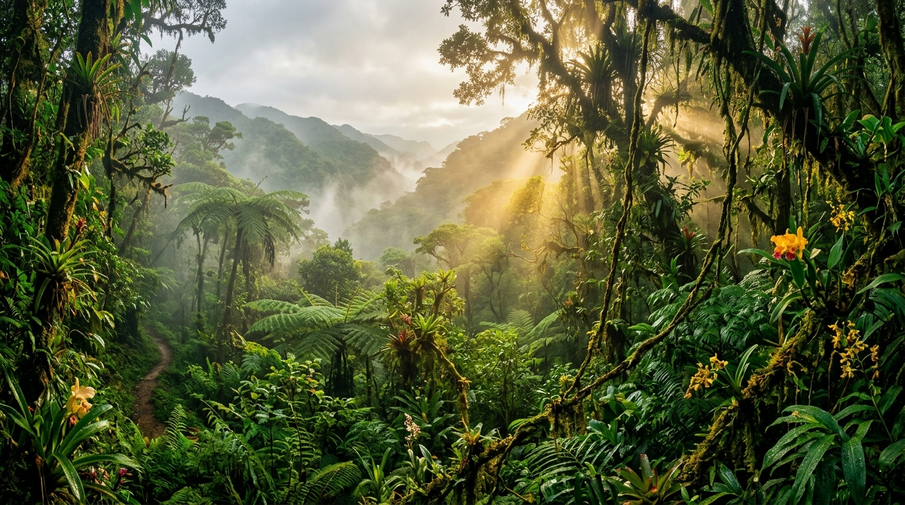

🏞️ Bienvenidos al PN-ANMI Cotapata
Ubicado en la Cordillera Real de los Andes, en el departamento de La Paz, el Parque Nacional Cotapata protege uno de los gradientes ecológicos más pronunciados del mundo.

40 Especies DocumentadasFlora y Fauna Autóctona
Desde el majestuoso Oso Andino (Jucumari) y el felino Tilcayo en el bosque nublado, hasta las queñuas milenarias y bofedales en la alta montaña. Con audios reales de fauna nativa.
Explorar especies →Turismo Comunitario
Hospedajes rústicos, albergues ecológicos, alimentación tradicional y guías comunitarios en localidades como Chairo, Sandillani y Pacollo.
Ver oferta comunitaria →El Camino Precolombino del Choro
La travesía peatonal más famosa de Bolivia: desciende más de 3,500 metros desde la gélida cumbre andina hasta los cálidos valles subtropicales de Yungas.
Consultar rutas y seguridad →🐾 Catálogo de Biodiversidad Nativa
40 especies documentadas con registros fotográficos, nombres científicos, descripciones bilingües y audios de fauna.
🏡 Servicios Turísticos Comunitarios
Iniciativas y emprendimientos locales con autorización y consentimiento informado de las comunidades.
🏞️ Atractivos Turísticos y Culturales
Puntos de interés natural, cascadas, miradores y vestigios del Camino del Choro.
🥾 Rutas y Senderos de Cotapata
Información técnica verificada: distancias, desniveles, dificultades y recomendaciones de seguridad.
📍 Geolocalización y Cartografía de Cotapata
Mosaicos cartográficos del Parque Nacional Cotapata con atractivos, comunidades y senderos.
🌱 Recomendaciones para una Visita Responsable
Código ético de conservación para proteger los ecosistemas andinos y respetar a las comunidades.
Mis Compromisos Ambientales
Toca cada principio para asumirlo durante tu visita a Cotapata:
🎓 Acerca del Proyecto Académico y Enfoque Ético
Universidad Salesiana de Bolivia · Ingeniería de Sistemas · La Paz, 2026
Integración Interdisciplinaria de Asignaturas
El Sistema Integrado de Información Turística Comunitaria de Cotapata articula tres asignaturas fundamentales de la formación universitaria:
- Análisis y Diseño de Sistemas: Levantamiento de necesidades con comunarios locales, identificación de actores (comunarios, visitantes, administradores), y definición rigurosa de requisitos funcionales y no funcionales comprobables.
- Sistemas Digitales I: Representación digital normalizada de la información (estructuras relacionales en 3FN), diseño lógico de flujos de consulta y actualización, y tablas de verdad para la autorización y publicación segura de datos.
- Sacramentos y Espiritualidad (Justificación Salesiana): Enfoque de servicio solidario, respeto irrestricto por la dignidad humana de los comunarios, consentimiento informado previo para la difusión de información y custodia responsable de la Creación y el patrimonio biocultural.
Equipo de Desarrollo (Estudiantes de Ingeniería de Sistemas)
Alba Lopez Pablo Alejandro · Casilla Callancho Eddy · Chipana Mamani Andrea Marilyn · Huanca Chambi Ruddy Ariel · Mujica Capquique Freddy Fernando · Nina Villca Juan Gabriel · Riveros Gamboa Fabiana Eliana · Vargas Choque Boris Rodrigo · Valle Calderon Carlos Ernesto.